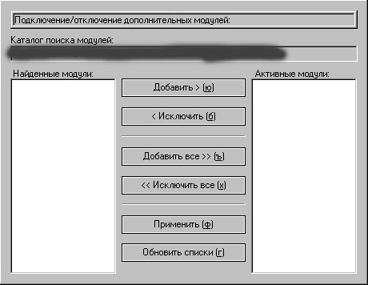

Интефейс программыИнтерфейс программы интуитивно понятен и состоит из следующих окон, в которых можно узнать какую-либо информацию, либо произвести настройку параметров программы, также будет уделено внимание некоторым особенностям работы с ними. Прокомментирую их кратко:
Главное менюМожно вызвать справку как по самой программе, так и по установленным модулям. Также из данного меню можно вызвать диалог, отображающий информацию о программе. Спрятать окно можно нажатием соответствующей кнопки. В данном случае, если нажать на X в заголовке окна или комбинацию клавиш Alt+F4, закрывающую окно, то оно будет просто спрятано и программа продолжит свою работу. Для того, чтобы завершить работу пограммы, следует нажать "Закончить работу". Завершить работу программы можно и по Ctrl+Alt+Del, она этому не противится, но все данные будут утеряны, не успев сохраниться. Быстрые клавиши: Подчёркнутые символные клавиши - выбор элемента меню О программе...СправкаБыстрые клавиши: Стрелки вверх и вниз - выбор элемента в списке Ввод - вывод выбранной справки Меню настроек программыБыстрые клавиши: Подчёркнутые символные клавиши - выбор элемента меню Настройка клавиш клавиатурыНапример, если в состоянии CNS стоит "[c+n-]", то это значит, что команда сработает при нажатии данной комбинации клавиш, причём Caps Lock должна быть во включенном состоянии, а Num Lock - в выключенном. При других состояниях действие выполняться не будет. Если CNS стоит в состоянии "[]", то действие будет выполняться в любом случае, независимо от состояний клавиш Caps Lock, Num Lock и Scroll Lock. Для установки комбинации клавиш команде следует нажать кнопку "Изменить", будет выведен диалог ввода. Быстрые клавиши (активные модули): Стрелки вверх и вниз или ЛКМ - выбор элемента Быстрые клавиши (список команд модуля): Стрелки вверх и вниз или ЛКМ - выбор элемента Insert или Двойное нажатие ЛКМ - изменить клавишу и состояния CNS Delete или ПКМ - очистить команду Настройка клавиш клавиатуры - Ввод горячей клавишиПри отслеживании клавиш клавиатуры могут быть учтены состояния клавиш Caps Lock, Num Lock и Scroll Lock в любой комбинации, определённой пользователем. Условием на ввод горячей клавиши, является то, что вводимые комбинации должны быть вида [модификатор(ы)] + клавиша_не_модификатор (исключается, например, A + Z). Так как в системе могут быть установлены горячие клавиши, которые перехватывают сообщения, предназначенные окну, то ввод осуществляется поочерёдным нажатием клавиш (не всех сразу): сначала клавиши-модификаторы или выставляются состояния клавиш CNS (Caps Lock, Num Lock, Scroll Lock), а в последнюю очередь нажимается клавиша-не-модификатор (символьные - не CNS и не модификаторы). При вводе клавиши-не-модификатора диалог закрывается и выбранному действию присваивается новое значение горячей клавиши. Быстрые клавиши: Alt+F4 - закрытие окна, выбранному действию ничего не соответствует Настройка кнопок WinLIRCЕсли вы спаяли схему и сделали все настройки в WinLIRC правильно, то программа с лёгкостью сможет подключиться к серверу WinLIRC. Для установки соответствия кнопки команде плагина следует выбрать эту команду и нажать кнопку ПДУ. В поле кнопка отобразится имя нажатой кнопки, а поле "N" (количество повторов) установится в значение (-1). - Если необходимо сделать так, чтобы кнопка сработала один раз, то следует поставить 0 повторов. - Если нужно сделать срабатывание кнопки через некоторое время, то можно поставить, например, 20 повторов, тогда она сработает примерно через 5-10 секунд (в зависимости от многих факторов: фотоприёмник, программа и так далее). Величина для конкретного промежутка времени определяется экспериментально. Быстрые клавиши (активные модули): Стрелки вверх и вниз или ЛКМ - выбор элемента Быстрые клавиши (список команд модуля): Стрелки вверх и вниз или ЛКМ - выбор элемента Insert или Двойное нажатие ЛКМ - изменить количество повторений Delete или ПКМ - очистить команду Настройка кнопок WinLIRC - Ввод количества повторенийМожно устанавливать следующие значения (-1) или меньше нуля - кнопка будет срабатывать множество раз, пока удерживается 0 - кнопка сработает только один раз при одиночном нажатии, при удерживании ничего происходить не будет больше нуля - количество повторений нажатия кнопки (при удержании) для срабатывания команды один раз По умолчанию это значение выставляется в (-1). Быстрые клавиши: Ввод - принять введённое значение Подключение модулейПри выводе диалога обнаруженные плагины должны появиться в левом списке "Найденные модули". Справа отображаются "Активные модули" в данный момент. Если вы хотите подключить модуль к программе или просто получить о нём информацию, то его следует сделать активным - отметить этот плагин и нажать кнопку "Добавить", тогда плагин появится в списке активных модулей. Аналогично используется кнопка "Исключить". Если вы хотите добавить в список все модули сразу, то следует нажать "Добавить все", а если удалить, то "Исключить все". Вышеупомянутые действия не загружают модули в память при добавлении и не выгружают - при исключении. Это этап планирования - предварительного распределения модулей. Для подтверждения произведённых действий следует нажать кнопку "Применить". Обновить списки можно с помощью соответствующей команды. Настройки программыRegisterHotKey - метод используется, если пользователь работает на компьютере в различных офисных приложениях; он ставит в систему горячие клавиши, соответствующие определённым командам. WinHooks - данный метод намного мощнее, чем предыдущий (требуется qshKeyCommanderHooks.dll); прежде всего он подходит для тех, кто играет в игры (Counter Strike, Half-Life, WinQuake, Quake3 и другие win-приложения; для Quake2 можно использовать и RegisterHotKey - проверено :)) и параллельно при этом хочет выполнять какие-либо действия, например, управлять Winamp'ом. Скрыть программу от Task Manager'а можно только в Win9x, в остальных NT-вых системах её можно с лёгкостью обнаружить. Переключение раскладки клавиатуры, при старте программы, предназначено для того, чтобы облегчить пользователю жизнь. Например, если у пользователя стоит по умолчанию русская раскладка, а у самой программы (её диалоги) или её плагина (например, меню) английский интерфейс, то нажав при русской раскладке символьную клавишу, выбора не осуществится, а при переключенной, наоборот - всё будет работать. Символ выбора - это подчёркнутые символы 1,2,3 и так далее, которыми вы пользуетесь/должны пользоваться :) для быстрого перемещения по настройкам программы. Для индикации нахождения программы в памяти можно использовать вывод её иконки в трэе (около системных часов). Также с помощью иконки трэя можно получить доступ к главному меню программы (левая клавиша мыши, если действие разрешено) или вывести диалог "О программе..." (правая клавиша мыши). Функция стирания одинаковых клавиш после ввода служит для того, чтобы избежать повторения клавиш или кнопок. Она осуществляется следующим образом: при вводе клавиши или кнопки проверяется, не связана ли она уже с каким-либо действием, если данная опция включена и клавиша/кнопка уже существует, то новые данные принимаются, а все повторные - стираются, при выключенной опции ничего не происходит и пользователь должен сам отслеживать все повторения. Программа может прописать себя в автозагрузку - при старте Windows (HKEY_LOCAL_MACHINE, "Software\Microsoft\Windows\CurrentVersion\Run" ключ "qshKeyCommander"), а также может и удалить себя из автозагрузки. Установка языка: Если вы не русский, то наверное вас напрягает интерфейс программы, в диалогах которой находятся непонятные "кракозябы". Но, к счастью, это можно исправить - не удалять же программу! :) Для исправления этого необходимо выбрать необходимый язык из уже установленных, если его нет, то можно зайти на сайт программы. Уж там, хоть английский (English), но найдётся. Итак, если язык уже скачан, а вы так и не знаете что с ним делать, то следует поступить следующим образом: разархивировать zip-файл языка в корневой каталог программы c заменой файлов, а затем перейти к данному диалогу. Переключение на другой язык не требует перезагрузки программы, нужно всего лишь закрыть все диалоги и снова открыть. Теперь разберёмся с доступом к главному меню программы. Способов доступа существует 4 вида: По трэю - разрешение получать доступ при нажатии левой клавишей мыши по иконке трэя; По комбинации клавиш - доступ по горячей клавише с помощью метода RegisterHotKey (без WinHooks); По паролю - пароль просто набирается в любом win-приложении (требуется qshKeyCommanderHooks.dll); По двойному запуску - программа выводит главное меню при повторном запуске программы; |